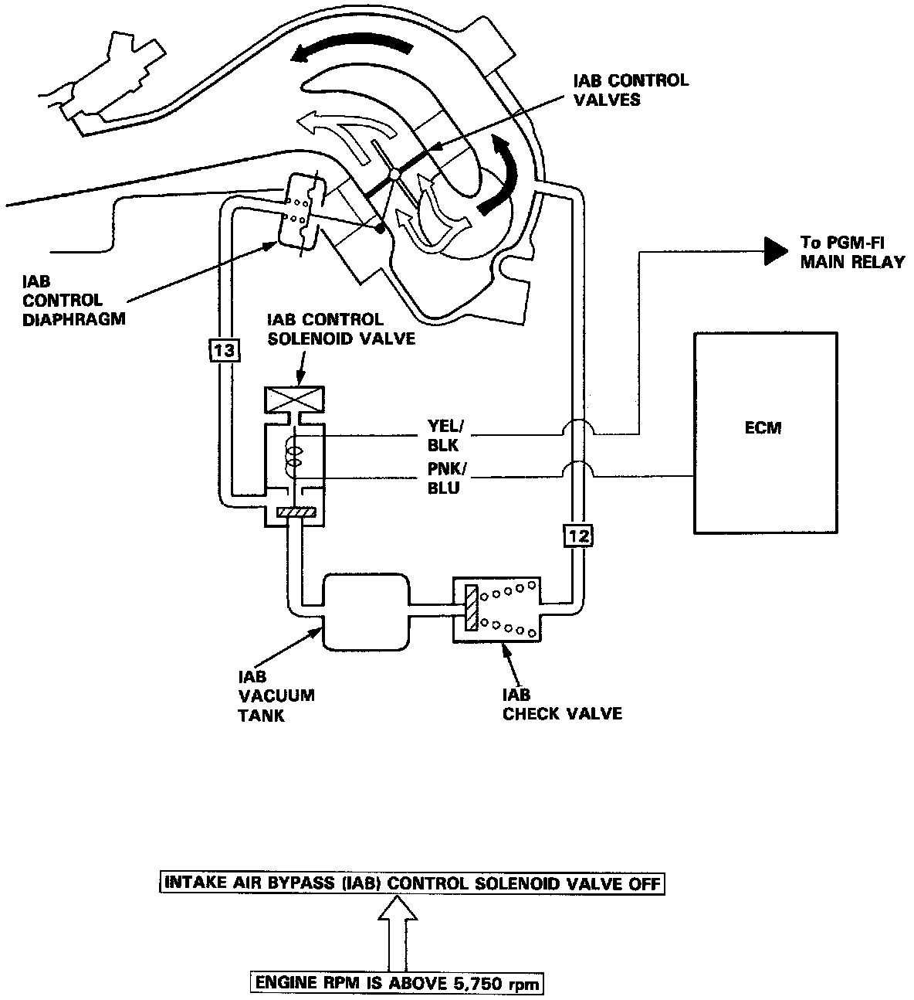

Variable Induction System: Description and Operation
Intake Air Bypass System Description:

PURPOSE
Two air intake paths are provided in the intake manifold to allow the selection of the intake path most favorable for a given engine speed.
OPERATION
Satisfactory power performance is achieved by closing and opening the intake air bypass (IAB) control valves. High torque at low RPM is achieved when the valves are closed, whereas high power at high RPM is achieved by when the valves are opened.